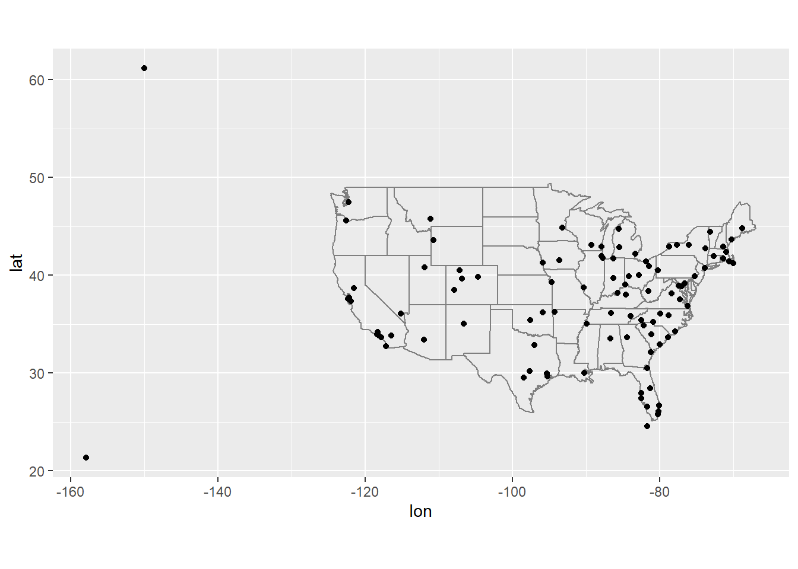
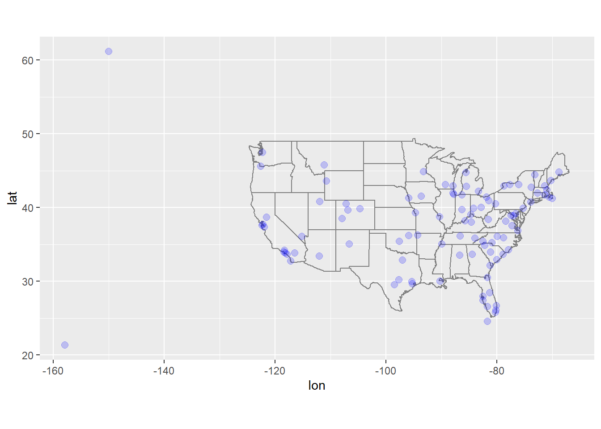
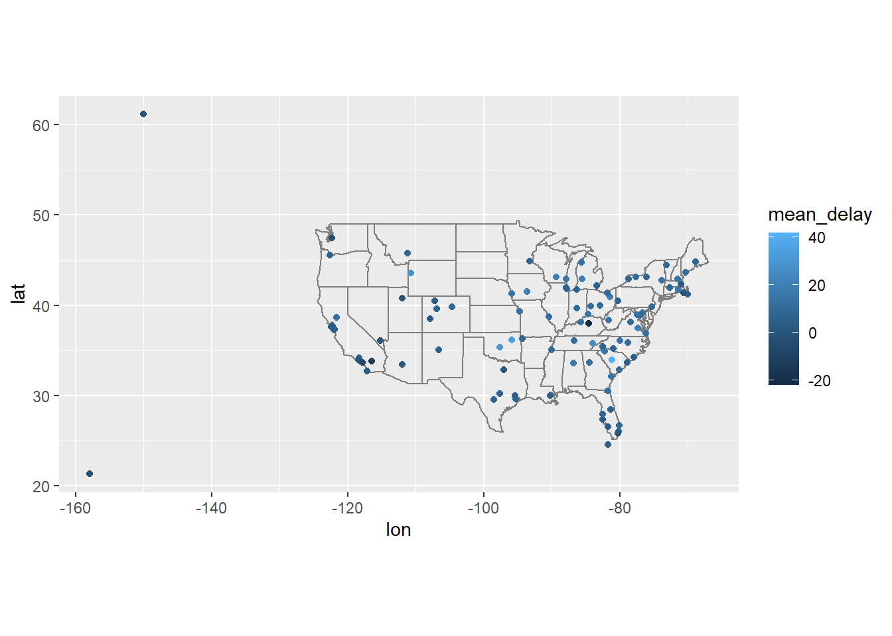
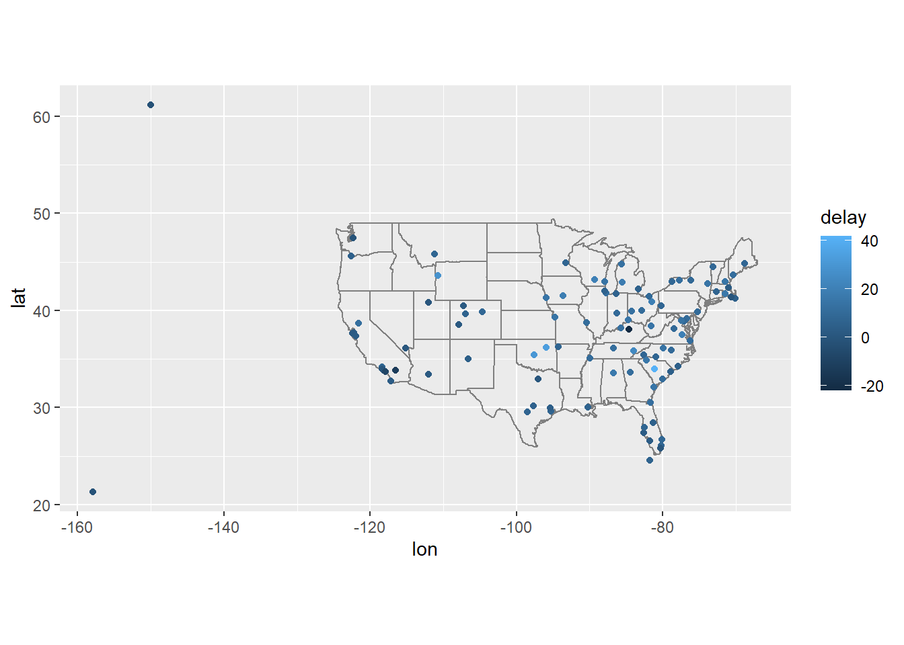
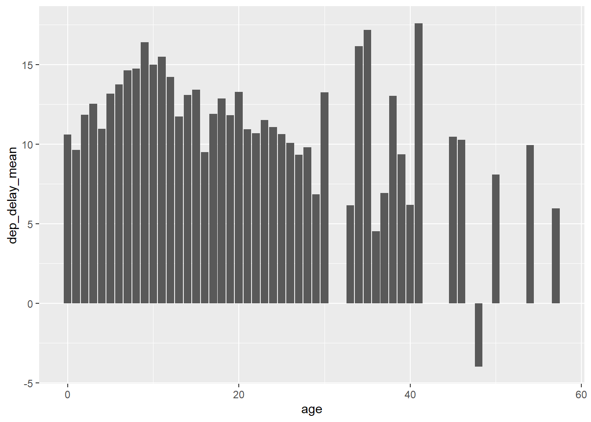

# Load required packages
library(tidyverse)## -- Attaching packages --------------------------------------- tidyverse 1.3.1 --## v ggplot2 3.3.5 v purrr 0.3.4
## v tibble 3.1.6 v dplyr 1.0.7
## v tidyr 1.2.0 v stringr 1.4.0
## v readr 2.1.2 v forcats 0.5.1## -- Conflicts ------------------------------------------ tidyverse_conflicts() --
## x dplyr::filter() masks stats::filter()
## x dplyr::lag() masks stats::lag()library(knitr)
#install.packages("nycflights13")
library(nycflights13)
flights %>% head() %>% kable()| year | month | day | dep_time | sched_dep_time | dep_delay | arr_time | sched_arr_time | arr_delay | carrier | flight | tailnum | origin | dest | air_time | distance | hour | minute | time_hour |
|---|---|---|---|---|---|---|---|---|---|---|---|---|---|---|---|---|---|---|
| 2013 | 1 | 1 | 517 | 515 | 2 | 830 | 819 | 11 | UA | 1545 | N14228 | EWR | IAH | 227 | 1400 | 5 | 15 | 2013-01-01 05:00:00 |
| 2013 | 1 | 1 | 533 | 529 | 4 | 850 | 830 | 20 | UA | 1714 | N24211 | LGA | IAH | 227 | 1416 | 5 | 29 | 2013-01-01 05:00:00 |
| 2013 | 1 | 1 | 542 | 540 | 2 | 923 | 850 | 33 | AA | 1141 | N619AA | JFK | MIA | 160 | 1089 | 5 | 40 | 2013-01-01 05:00:00 |
| 2013 | 1 | 1 | 544 | 545 | -1 | 1004 | 1022 | -18 | B6 | 725 | N804JB | JFK | BQN | 183 | 1576 | 5 | 45 | 2013-01-01 05:00:00 |
| 2013 | 1 | 1 | 554 | 600 | -6 | 812 | 837 | -25 | DL | 461 | N668DN | LGA | ATL | 116 | 762 | 6 | 0 | 2013-01-01 06:00:00 |
| 2013 | 1 | 1 | 554 | 558 | -4 | 740 | 728 | 12 | UA | 1696 | N39463 | EWR | ORD | 150 | 719 | 5 | 58 | 2013-01-01 05:00:00 |
Question 1: Compute the average delay by destination, then join on the airports data frame so you can show the spatial distribution of delays. Here’s an easy way to draw a map of the United States:
#install.packages("maps")
library(maps) ##
## 载入程辑包：'maps'## The following object is masked from 'package:purrr':
##
## mapairports %>%
semi_join(flights, c("faa" = "dest")) %>%
ggplot(aes(lon, lat)) +
borders("state") +
geom_point() +
coord_quickmap()
#install.packages("maps")
#library(maps)
airports %>%
semi_join(flights, c("faa" = "dest")) %>%
ggplot(aes(lon, lat)) +
borders("state") +
geom_point(size=2.5,colour="blue",alpha = 1/5) +
coord_quickmap()
avg_delay <-
flights%>%
group_by(dest)%>%
summarise(mean_delay = mean(arr_delay, na.rm = TRUE))%>%
inner_join(airports, by = c(dest = "faa"))
avg_delay %>%
ggplot(aes(lon, lat, colour = mean_delay)) +
borders("state") +
geom_point() +
coord_quickmap()
avg_dest_delays <-
flights %>%
group_by(dest) %>%
# arrival delay NA's are cancelled flights
summarise(delay = mean(arr_delay, na.rm = TRUE)) %>%
inner_join(airports, by = c(dest = "faa"))
avg_dest_delays %>%
ggplot(aes(lon, lat, colour = delay)) +
borders("state") +
geom_point() +
coord_quickmap()
planes_info <- inner_join(flights,
select(planes,tailnum,year),
by = "tailnum",
suffix = c("_flight","_plane"))%>%
mutate(age=year_flight-year_plane)%>%
filter(!is.na(age)) %>%
group_by(age) %>%
summarise(
dep_delay_mean = mean(dep_delay, na.rm = TRUE),
arr_delay_mean = mean(arr_delay, na.rm = TRUE)
)
ggplot(planes_info, aes(x = age, y = dep_delay_mean)) +
geom_col()